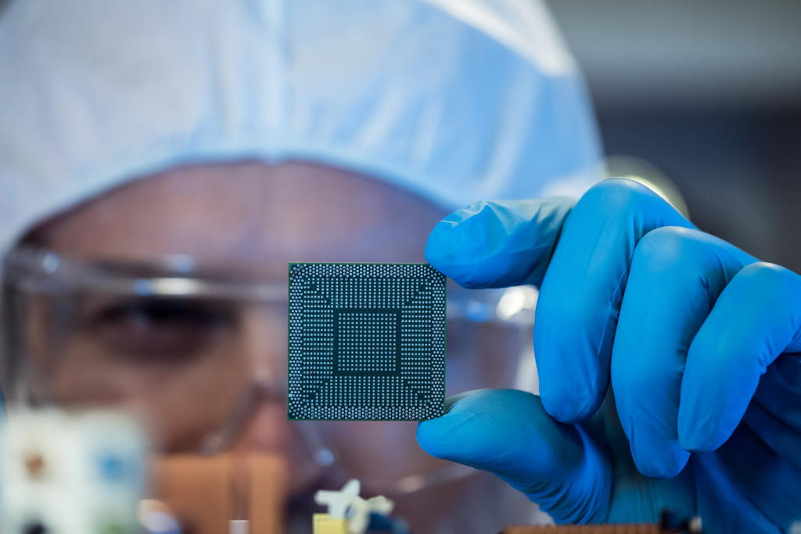

25 years as a semiconductor executive.
From 15-person startups to $8B public corporations (indie, SiTime, Renesas/IDT). Now available for interim and embedded leadership roles, as well as strategic advisory and operational engagements. I work with semiconductor, electronics, and deep-tech companies, from funded startups to established mid-sized firms, across automotive, industrial, aerospace & defense, communications & enterprise, and test & measurement.
- Built IDT/Renesas automotive timing portfolio from zero to $10M+ revenue
- Drove $100M+ opportunity pipeline for 120 GHz automotive radar at indie Semiconductor
- Led 70% wafer cost reduction through foundry migration and supply chain restructuring
- Currently providing embedded commercial leadership for semiconductor and tech companies
Previously
VP Radar Product Line at indie Semiconductor, Director Segment Marketing at SiTime, Global Product Line Manager at Renesas (formerly IDT).
Background
Engineer by training, pilot and aircraft owner, bass player in an orchestra. MBA from UMass Amherst. Master's in Physics, Electronics & Optics from ENSPS Strasbourg. ISO 26262 Functional Safety certified. Trilingual (French/English/German). Based in Munich, working across Europe.
Services

Interim & embedded leadership
Hands-on executive capacity when you need experienced leadership, without the permanent commitment.
- Interim General Manager / Business Unit Lead
- Product line P&L ownership and turnaround
- Cross-functional leadership across engineering, sales, and operations
- Transition management and organizational change
Strategic advisory
Board-level and executive support on technology strategy, market positioning, and critical business decisions.
- Market entry and go-to-market strategy
- Technology and competitive landscape assessment, including AI/ML adoption in semiconductor workflows
- M&A due diligence and integration support
- Investment thesis validation for private equity and venture capital
Operational execution
Defined projects with clear deliverables and timelines.
- Product roadmap development and portfolio rationalization
- Customer engagement strategy and key account support
- Executive communication and market narratives
Looking for an embedded international commercial team, not a single advisor? That's the focus of The Engine Factory, a separate practice I'm building with a network of senior semiconductor commercial operators.